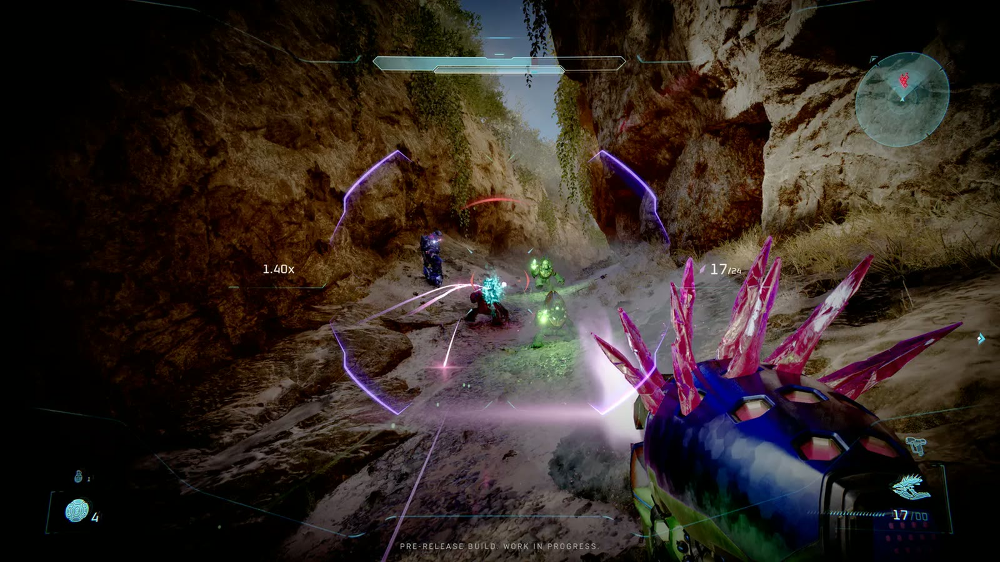
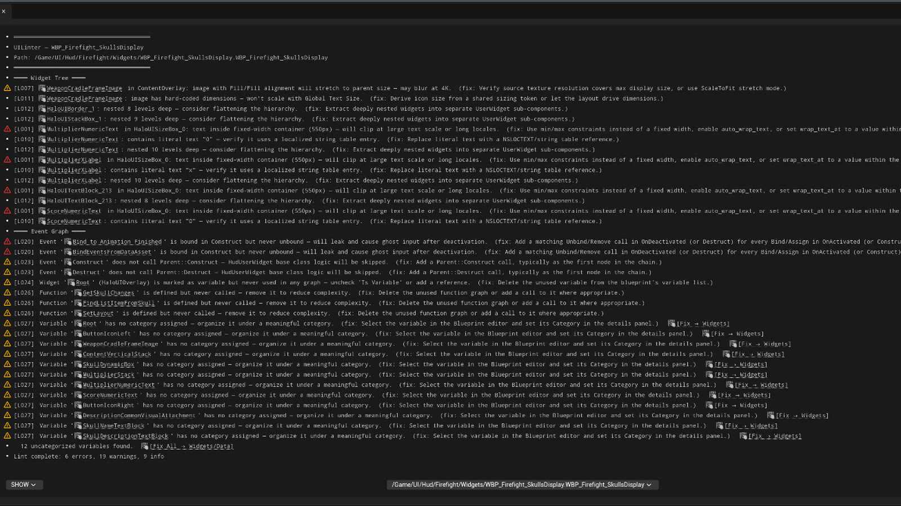
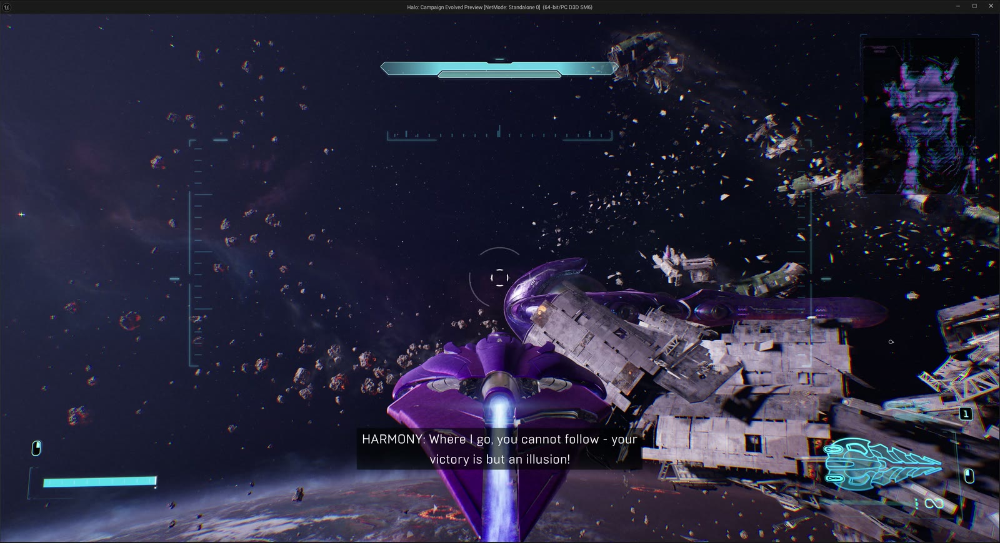
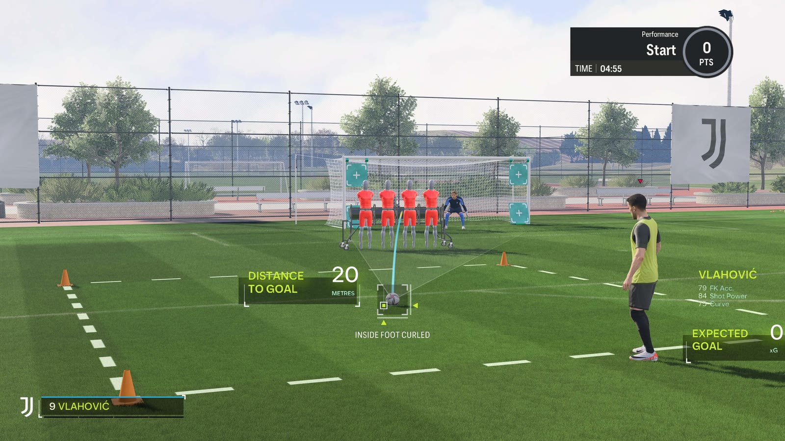

Home / Case Studies
Technical deep-dives, problems, constraints, approach, and measured results. Most involve UI systems, editor tooling, static analysis, or GPU / memory work.

PerformanceReplaced tribal knowledge about screen-wide HUD effects with measured, platform-caveated PIX evidence, including one result that disproved the received wisdom.
Read case study →
ToolsA 27-rule, 135-test static analyzer for Unreal Widget Blueprints that eliminated recurring defect classes from review and gave the UI team a deterministic pre-merge gate.
Read case study →
MaterialsOne material, six composable analog-interference effects, driven by audio events on individual voice lines. A 7-CustomUV pass moved 24 pixel-shader instructions to vertex and dropped 2 texture samples.
Read case study →
SystemsA shared component library powering three contextual gameplay overlays. Turned a 4-day estimate into 2 days on FC 24, and a 2-day refresh into 4.5 hours on FC 25.
Read case study →